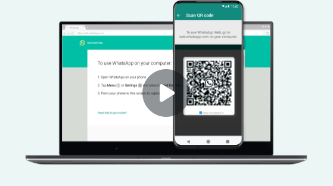

WHATSAPP WEB
Baixar o WhatsApp para Windows
Faça ligações, use o compartilhamento de tela e tenha uma experiência de
uso mais rápida com o novo app para Windows.
Use o WhatsApp no seu computador
Abra o WhatsApp no seu celular.
Toque em
Mais opções
no Android ou em
Configurações
no IPhone
Toque em
Dispositivos conectados
e, em seguida, em
Conectar um dispositivo.
Aponte seu celular para essa tela para capturar o QR Code.
Conectar com o número de telefone
Tutorial
Precisa de ajuda para começar?
